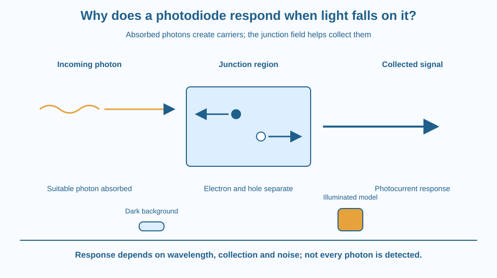

Explain how incoming light can create an electrical detection signal in a photodiode. Follow photon absorption, carrier generation and separation near a semiconductor junction. Distinguish a light detector from a light emitter and from an optical system that forms an image.
A detector can respond when a light beam reaches it, even though nothing visibly pushes a switch. The useful change happens inside a semiconductor, where absorbed light can create mobile charge carriers.
The device does not need to recognise a face or form a photograph to detect that change. A single sensing region can produce a signal related to the light reaching it.
The mystery is therefore a conversion problem: how does an incoming optical event alter an electrical signal? A lens may guide light toward the detector, but the lens alone does not explain the conversion.
A photodiode is a semiconductor device designed to detect light. Its structure includes a junction and a region where an electric field helps collect light-generated carriers.
Light arrives in quanta called photons. If a photon is absorbed with suitable energy, it can promote an electron into a mobile state and leave behind a hole. An electron–hole pair is an electronic change in the material, not a pair of physical holes drilled into it.
The junction's electric field drives electrons and holes in opposite directions. Collecting these separated carriers contributes to photocurrent in the detector circuit. Without suitable collection, generated carriers may recombine instead of contributing to the measured signal.
Photodiodes can operate in different modes. A commonly used detection mode applies reverse bias, which helps establish a suitable collection region and operating response. Other designs use zero applied bias. Thus the statement every photodiode always requires the same external voltage would be false.
Within an appropriate operating range and at a fixed wavelength, more received optical power generally produces more photocurrent. This relationship makes the detector useful for comparing illumination, following a changing beam or recognising whether a path is blocked.
The response depends on wavelength as well as power. Different semiconductor materials absorb different spectral ranges. Not every arriving photon is absorbed and successfully collected, so the simple picture is not a claim of perfect detection efficiency.
A real device can also have dark current and other noise even without the intended illumination. Small signals must be distinguished from that background. At large inputs or unsuitable circuit conditions, a system can leave its useful response range instead of continuing linearly forever.
An LED mainly converts electrical input into light through suitable recombination. A photodiode uses incoming light to generate a detection signal. Their related semiconductor language does not make their intended functions identical.
A single photodiode reading also does not automatically contain a complete image. Image systems require an arrangement that preserves spatial information, with appropriate optics and sensing regions. This lesson concerns the local light-to-signal mechanism rather than camera image formation or mobile-phone transmission.
Draw an incoming photon arrow toward a junction region. At absorption, replace the arrow with an electron symbol and a hole symbol. Then separate them toward opposite collection sides.
Mark a signal arrow leaving the circuit model. Add a second route where a generated pair recombines without contributing to collection. This makes the detection efficiency limitation visible.
Keep the order straight: incoming light, absorption, carrier generation, separation and collection. A signal already flowing through a wire is not itself the incoming photon. The diagram connects two different physical descriptions through a conversion event in the semiconductor.
The SVG shows a photon reaching a central semiconductor region. Two separated carrier arrows point toward different collection sides, followed by a photocurrent-signal label.
A lower comparison distinguishes a dark-background reading from a larger illuminated signal in a qualitative model. The bars have no measured current scale and do not specify a device performance.
The subtitle identifies this as a carrier-generation and collection model. It does not portray a finished camera or instruct students to wire a sensor. Labels distinguish electrons, holes and incoming light rather than using one arrow for everything.

Optical sensing appears in laboratory instruments and automatic systems used in India and elsewhere. In a beam-interruption arrangement, the electronics can compare the detector signal when a path is clear with the signal when the beam is blocked.
A change in signal still needs interpretation. Dirt on an optical surface, a changing source, ambient light or a blocked path can all affect the received illumination. A detector is not automatically an infallible object counter.
The classroom activity uses drawn photons and carriers. No laser, bright lamp, dismantled gadget or improvised circuit is needed. Understanding the mechanism does not depend on exposing eyes to a beam or opening a consumer device.
Use paper and three colours for photons, electrons and holes.
Explain why not every drawn photon must become a collected pair. Keep all quantities qualitative. Ask a partner to identify which arrow is optical input and which represents carrier movement so the model does not confuse light with charge flowing through the circuit.
Why must a faint-light detector account for a nonzero background? A signal change is meaningful only relative to the variation and noise against which it is measured.
Now compare two light colours with the same incoming optical power. Must they produce identical signals in every photodiode? Explain why material response and wavelength matter before claiming that one detector reading measures all kinds of light equally well.
What can suitable photon absorption create in a photodiode?
Answer: C — Absorption can generate mobile electronic carriers inside the semiconductor.
Why does the junction field help detection?
Answer: B — Carrier separation helps light-generated charge contribute to the electrical signal.
A weak-light signal is close to the dark reading. What must be considered?
Answer: A — A small light-induced change must be distinguished from the detector system's background variation.
Draw a beam-presence detector as a chain: light source, optical path, photodiode, signal comparison and a stated decision. Inside the photodiode, include carrier generation and collection.
Add two alternative explanations for a reduced signal, such as an obstructed path or a dimmer source. Your proposal should identify evidence needed to distinguish them. It is a paper signal model, not a circuit-building or laser activity.
A light detector can have an electrical reading in darkness. The useful information may be a change above background rather than the appearance of current from an exact zero. Recognising that baseline is part of explaining how real detection differs from a perfect cartoon switch.
A photodiode converts suitable absorbed light into electron–hole pairs; their separation and collection produce a signal whose usefulness depends on wavelength, background and operating range.